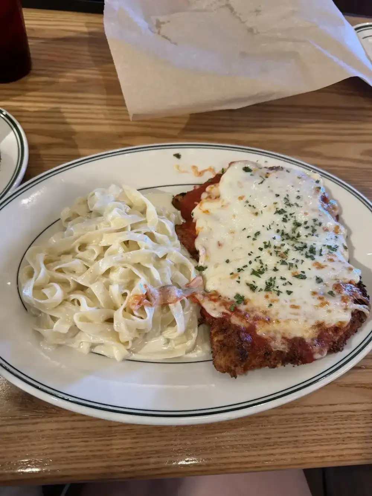
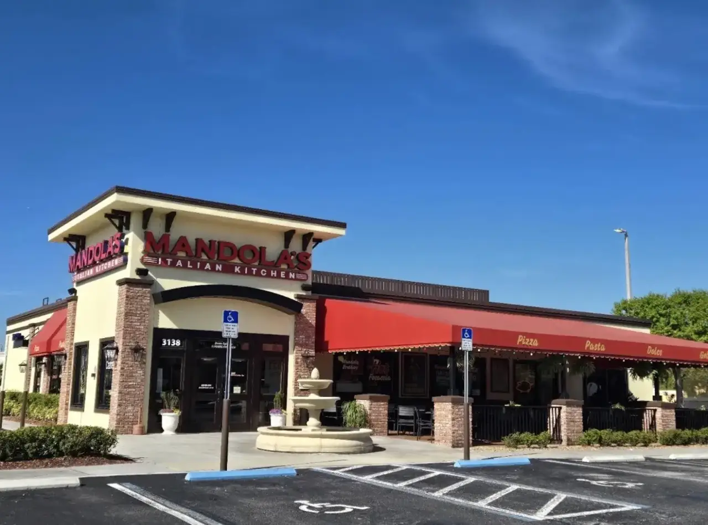
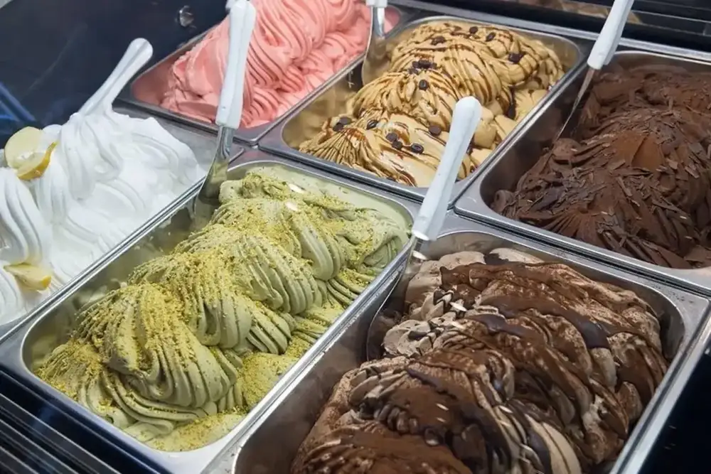
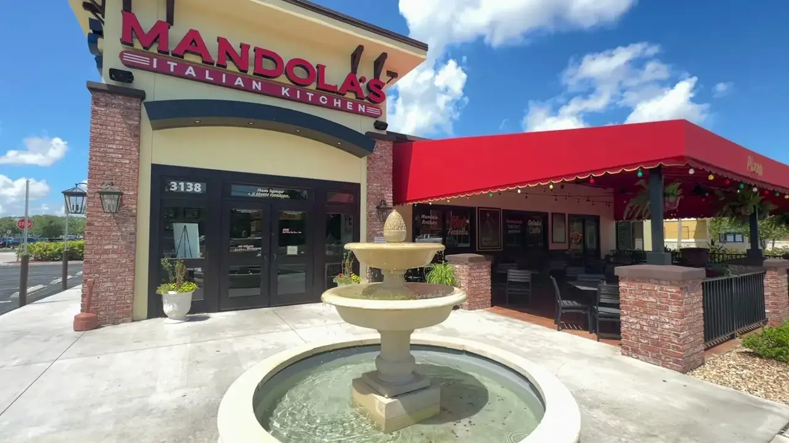
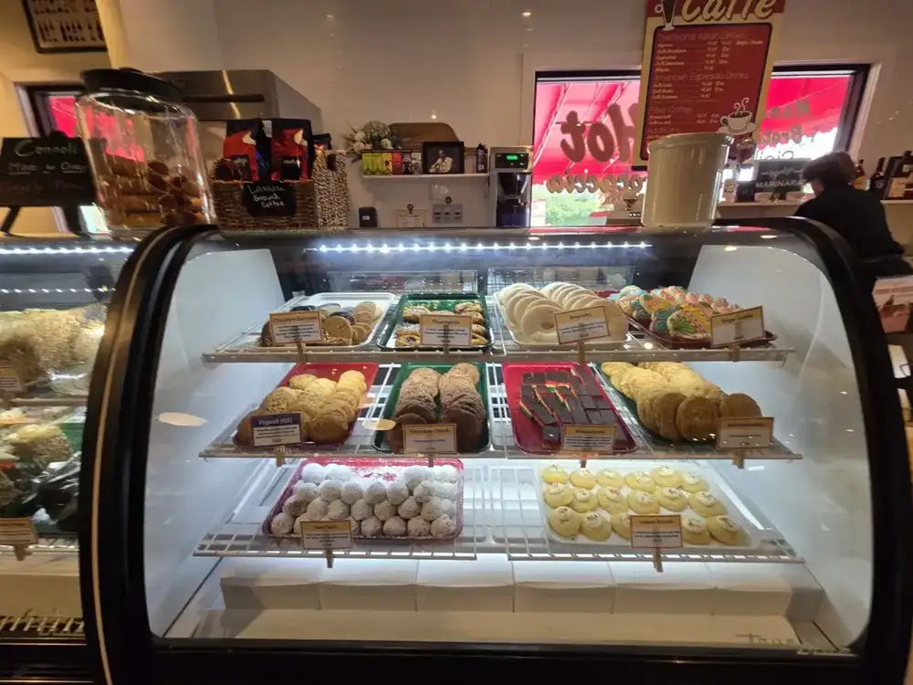

Pizza, hand-stretched
Margherita with a crust crisp on the bottom and doughy on top, one guest wrote. Personal pizzas for kids come with a gelato cup.
Plan this →Italian kitchen and market · Tampa Rd, Oldsmar
Pizza from hand-stretched dough, chicken parmesan, fresh focaccia on the table and a gelato counter, with party trays and catering for the whole crowd.

What guests come for
What reviewers keep ordering, and what we cater.
Margherita with a crust crisp on the bottom and doughy on top, one guest wrote. Personal pizzas for kids come with a gelato cup.
Plan this →
A family favorite: chicken parmesan beside fettuccine Alfredo. Pasta, lasagne and a gluten free pasta option round it out.
Plan this →
Pistachio, chocolate, lemon and more in the case, scooped by Kelcie with a great attitude, says one guest.
Plan this →From call to cleanup
Tell us the date, headcount and what you need.
Party trays, box lunches or dessert platters.
We come back with a menu idea. No payment on the form.
Catering offers pick-up and delivery.





4.5 ★ · 1494 Google reviews
From the moment you walk through the doors, Mandola’s Italian Kitchen feels incredibly welcoming. The restaurant is spotlessly clean, bright, and has that fantastic, energetic Italian market vibe. The service here is top-notch. The manager, Tony, greeted us with a genuinely warm welcome right at the start, which set a great tone for the entire visit.
From the moment you walk through the doors, Mandola’s Italian Kitchen feels incredibly welcoming. The restaurant is spotlessly clean, bright, and has that fantastic, energetic Italian market vibe. The service here is top-notch. The manager, Tony, greeted us with a genuinely warm welcome right at the start, which set a great tone for the entire visit.
Amazing food and great service. My new favorite place to get a margherita pizza! Fresh and flavorful! The crust was crisp on the bottom and doughy on top. The chicken parmesan is also one of our favorites! And the complimentary focaccia bread is also the best I've ever had! Fresh, soft, and chewy. I like the separate dessert coffee bar.
This was the first time I came to this restaurant, and it was wonderful. I was greeted by Tony, who welcomed us and told us how to order our food. They brought foccia bread with seasoned olive oil to the table, which was awesome. Then, the food came and everything was wonderful.

Behind the table
Mandola's Italian Kitchen on Tampa Rd in Oldsmar is bright, energetic and set up like an Italian market: red and green chairs, framed family photos, flags overhead and a separate gelato and dessert coffee bar.
Guests mention the people as much as the food. Manager Tony greets first-timers and explains how to order, Kelcie scoops the gelato, Sam looks after the bar and Chef Angie gets thanked for the food. The Mandola family, Damian and Trina, started Mandola's Italian Market in the Austin area and now run locations across Texas, Tampa, Jacksonville and Maitland.
Before you book
Yes. Guests mention gluten free bread and plenty of gluten friendly dishes, and the menu lists gluten free pasta and pizza crust.
Yes, you can order pickup and delivery online or through the Mandola's app.
Yes: pick-up, delivery, party trays, box lunches and dessert platters. Call the Oldsmar kitchen or send a request.
Guests mention complimentary focaccia with seasoned olive oil for the table.
Get in touch
3138 Tampa Rd, Oldsmar, FL 34677
It can get a little noisy inside on a busy night, and the room is bright with Italian decor. You can also order pickup and delivery online.
Oldsmar, Safety Harbor, Westchase, East Lake, Town 'n' Country